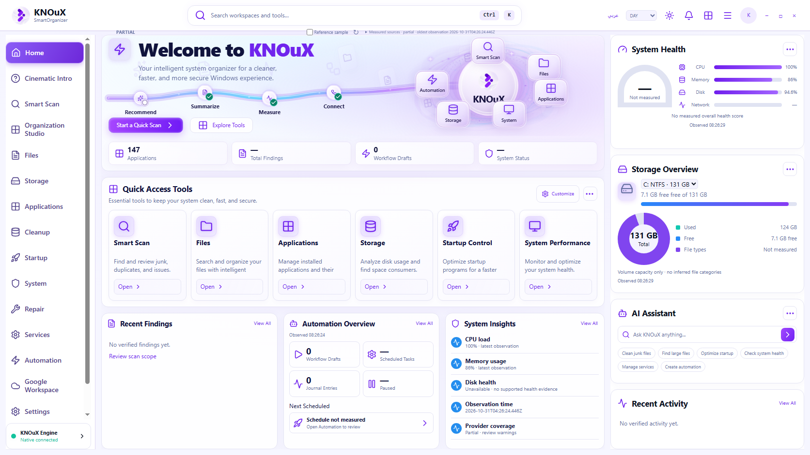
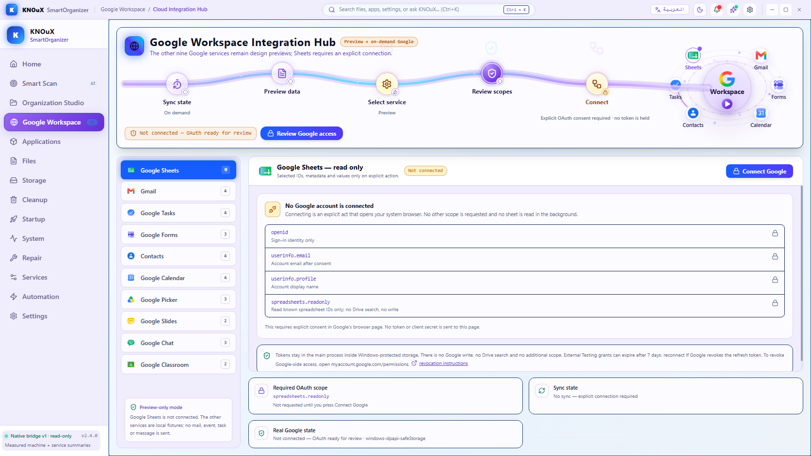

Left: exact owner-supplied image. Right: actual isolated Electron rendering. Differences in measured values are intentional. Geometry checks are not visual approval. These screenshots include empty, partial and measuring native states.
Organization Studio
Owner referenceActual Electron · local WIP · visual approval OPEN
Home
Owner referenceActual Electron · local WIP · visual approval OPEN

Google Workspace
Owner referenceActual Electron · local WIP · visual approval OPEN

Startup
Owner referenceActual Electron · local WIP · visual approval OPEN
Smart Scan
Owner referenceActual Electron · local WIP · visual approval OPEN
Applications
Owner referenceActual Electron · local WIP · visual approval OPEN
Services
Owner referenceActual Electron · local WIP · visual approval OPEN
System
Owner referenceActual Electron · local WIP · visual approval OPEN
Repair
Owner referenceActual Electron · local WIP · visual approval OPEN
Automation
Owner referenceActual Electron · local WIP · visual approval OPEN
Home — additional owner crop (512×512)
This is the eleventh design asset: a cropped composition reference, not an additional route or full viewport.
Verified owner cropSame Home route · Electron 1672×941